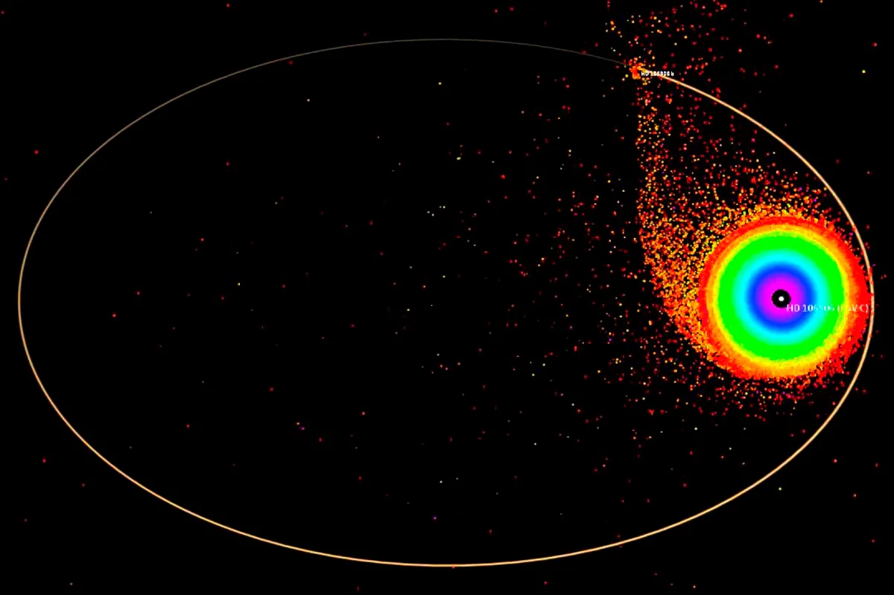

Эта очаровательная планета болтается в созвездии Южный Крест, приблизительно в 300 световых лет от Земли.
В 11 раз превышающая размер Юпитера, HD 106906 b стала настоящим открытием современных астрономов. Несмотря на ее огромный размер,
планета вращается вокруг своей звезды на расстоянии в 20 раз больше пространства между Солнцем и Нептуном, что составляет приблизительно 60,000,000,000 миль.
Это делает её одной из самых одиноких известных планет во вселенной. Астрофизики поражаются этому изгою, потому что планеты вроде Юпитера обычно расположены ближе к их звезде.
Существует гипотеза, что HD 106906 b – неудавшаяся звезда, бросающая вызов двоичной звездообразной теории.
